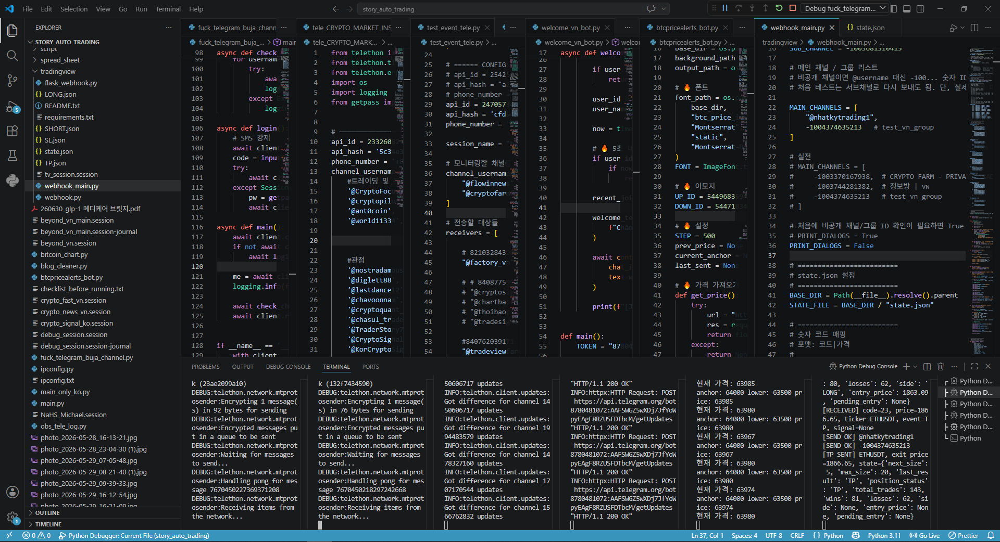
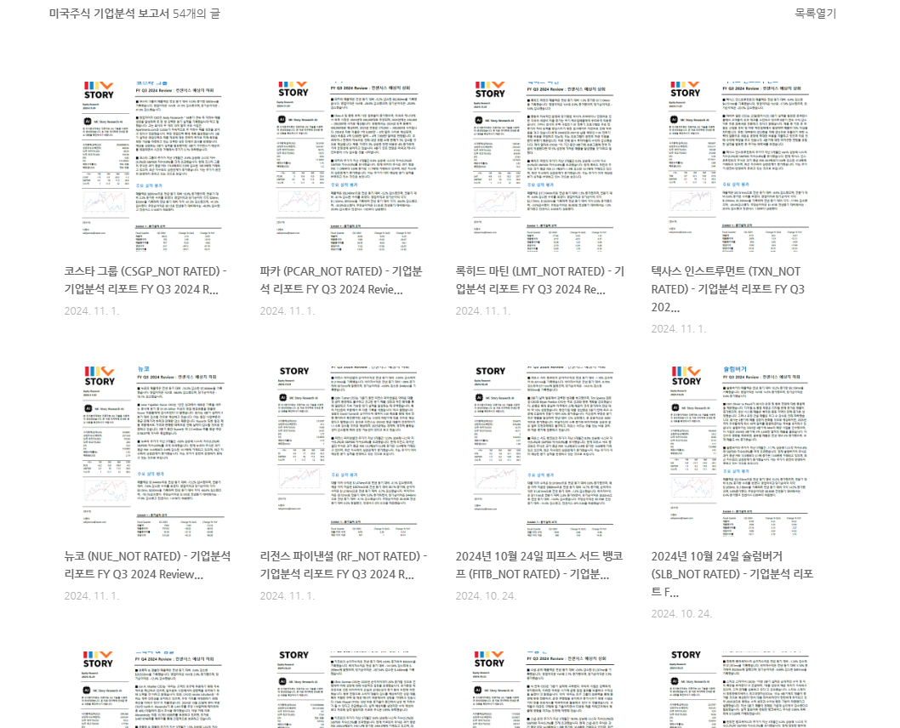
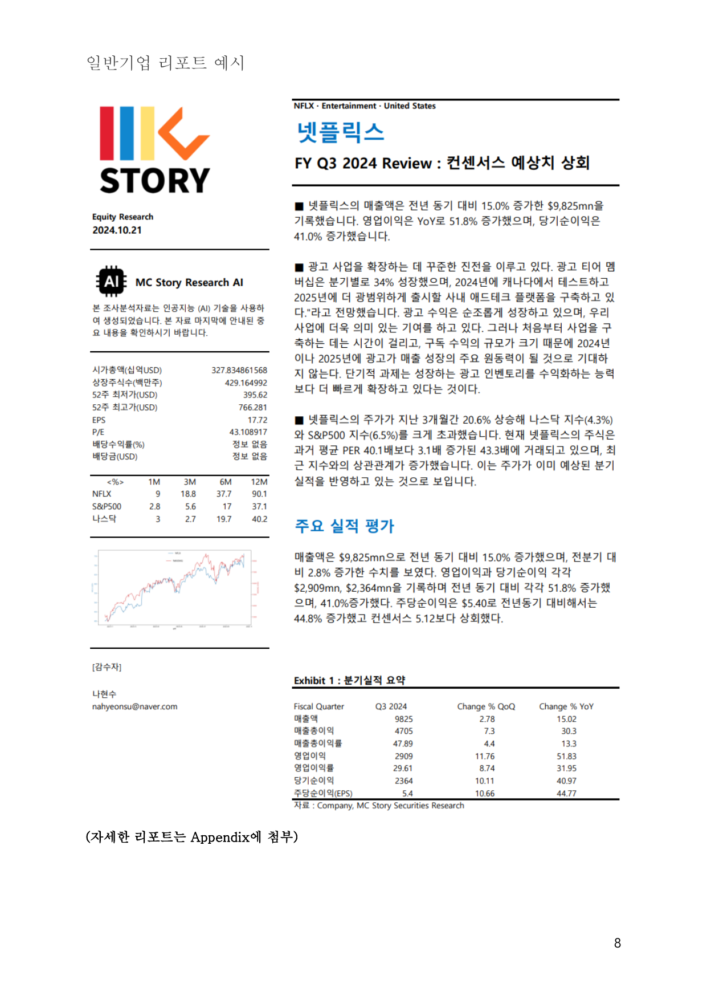
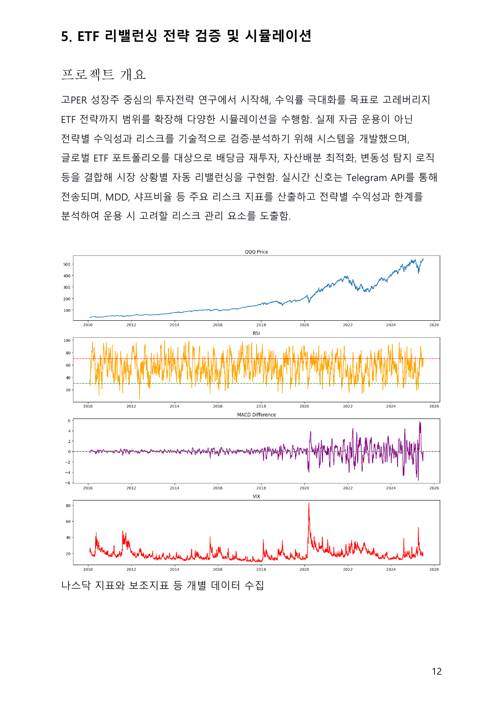
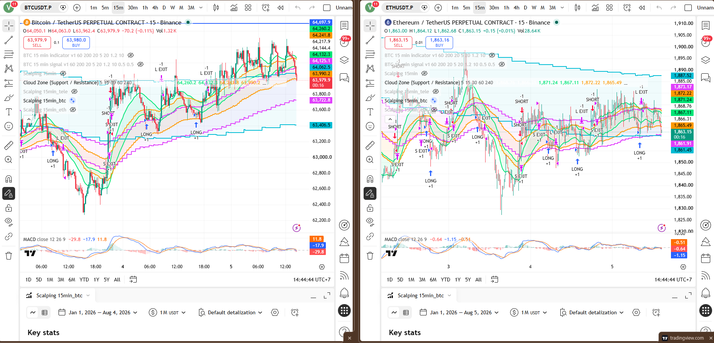
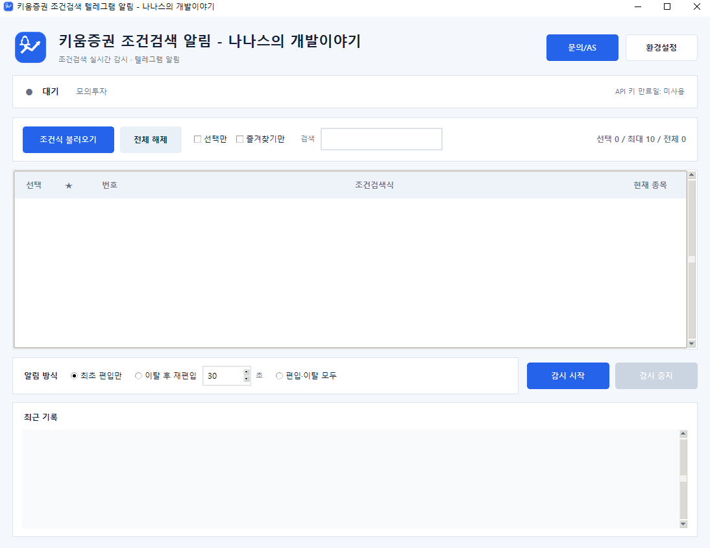
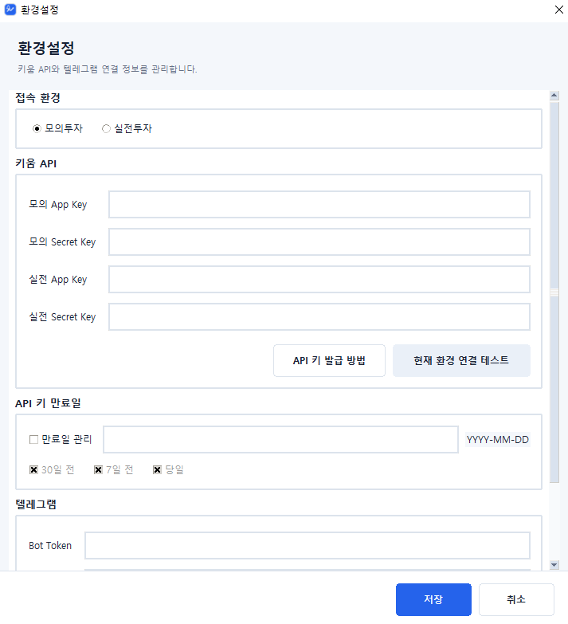
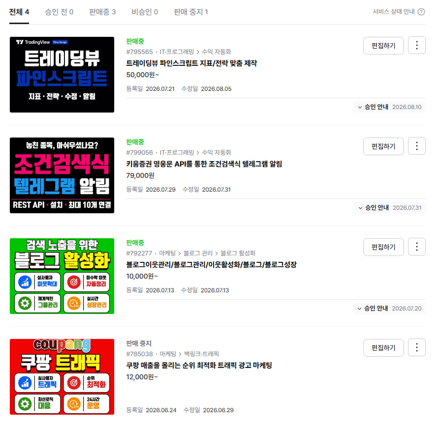

부자리서치
주식회사 엠씨스토리
투자전략부 · 2023.12–2024.11
- 미국주식 실적 및 밸류에이션 리서치
- 투자전략 실행 흐름과 백테스트 검증
- 금융 데이터·리포트 자동화
- API 기반 운용 지원 시스템 구축
2023년 12월부터 투자전략 업무를 수행하며 미국주식 기업분석, 투자전략 검증, 리포트 자동화와 금융 API 시스템을 구축했습니다.
부자리서치(주식회사 엠씨스토리)에서 미국주식 리포트, 투자전략 검증, 거시경제 모니터링과 금융 데이터 자동화를 수행했습니다. 이후 TradingView, Telegram, 키움증권 REST API를 연결한 독립 시스템으로 경험을 확장했습니다.
투자전략부 · 2023.12–2024.11

결과물의 개수보다 데이터 수집, 분석 기준, 문서 포맷을 표준화해 같은 품질로 반복 생산할 수 있는 구조를 만드는 데 집중했습니다.
미국 상장기업의 분기 실적, 재무제표, 경영진 코멘트, 상대수익률과 밸류에이션을 분석했습니다. 리포트는 부자리서치 블로그에 아카이브했습니다.



글로벌 ETF 포트폴리오에 배당 재투자, 자산배분, 변동성 탐지와 리스크 지표 산출을 결합하여 전략별 성과와 한계를 비교했습니다.
차트의 신호, 증권사 API, Telegram 알림과 사용자 GUI를 연결해 실제로 실행하고 모니터링할 수 있는 프로그램을 구축했습니다.

사용자가 만든 키움 조건검색식의 편입·이탈을 실시간으로 감시하고 Telegram으로 전달하는 Windows 프로그램입니다. 모의·실전 환경, 최대 10개 조건식, 토큰 갱신, 재연결, 로그와 사용자 설정을 하나의 GUI로 구성했습니다.


시장 뉴스, 가격 알림, 채널 운영과 TradingView 신호를 목적별 독립 모듈로 구성했습니다.

설치 절차, API 발급, 제공 범위, 원격 지원과 AS 기준까지 사용자 관점에서 정리했습니다.
미국주식 실적 분석, 밸류에이션, 거시경제 모니터링, ETF 전략 검증
증권사 REST API, OAuth, WebSocket, 주문·조건검색 흐름과 실시간 알림
Python 데이터 수집, 리포트 생성, Telegram·Webhook 연동, GUI 운영 도구
나현수 · Michael Hyeonsu Na